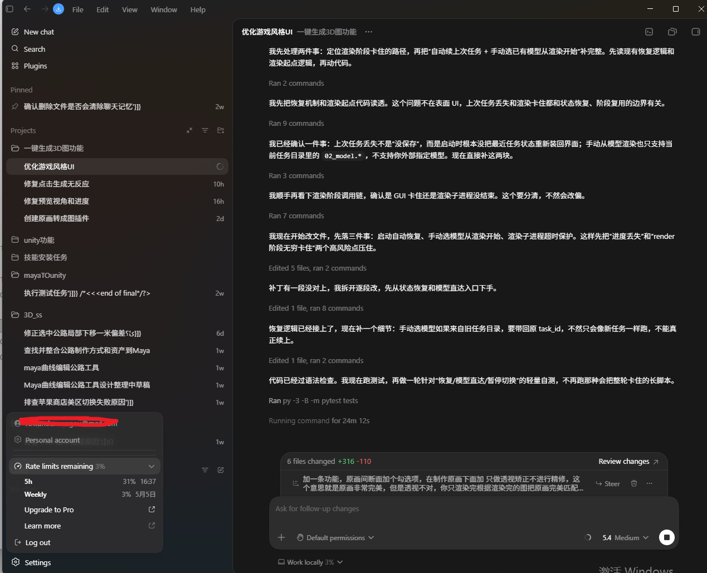

Xiaomi MiMo Orbit Application Proof
Codex-driven creator workflow for plugins, games, and design tools.
This page documents a real AI-assisted engineering workflow: planning, editing, testing, screenshot review, and iteration for practical plugin development, mini-game engineering, and art/design tooling.
Application Profile
Work Areas
- Work plugins and productivity tools for repeated development tasks.
- Browser mini-game engineering, UI states, rendering flow, and testing.
- Art/design utilities, image workflow support, and 3D-related helpers.
- Agent-assisted debugging from code reading to verified fixes.
Workflow
Proof Screenshot
The screenshot shows an active Codex session with implementation notes, command execution, file edits, tests, and change review for a game-style UI and 3D workflow task.

MiMo Usage Plan
If approved, MiMo credits will be used for high-frequency agent coding, reusable plugin and mini-game templates, design-tool prototypes, longer debugging loops, and practical comparisons with GPT, Claude, and DeepSeek.
Final Xiaomi submission requires the official page CAPTCHA. The proof screenshot has already been uploaded through the Xiaomi activity upload API.